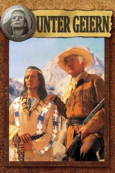
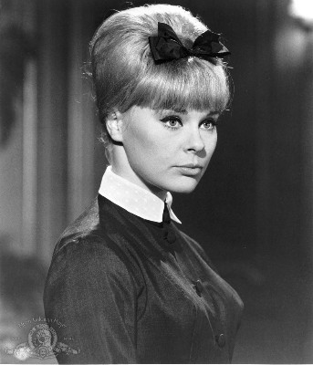
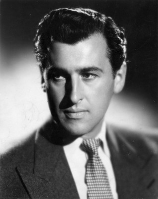
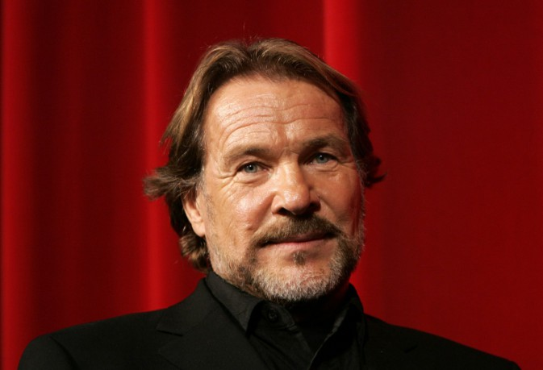
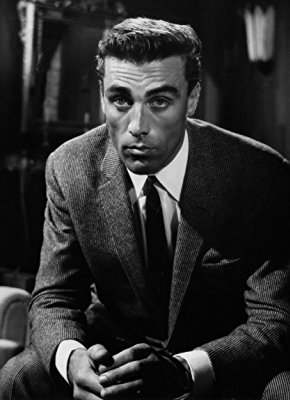
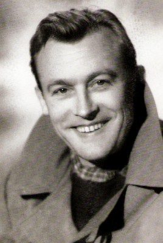
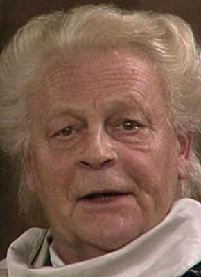

#373 Karl May 06 - Unter Geiern
Alternativ: Amongst Vultures (Originaltitel)
 
 IMDB-Wertung: 5.9 / 10
IMDB-Wertung: 5.9 / 10  Metascore: 0
Metascore: 0 
Old Surehand and Winnetou investigate the murders of a mother and daughter. The surviving husband believes that his wife and daughter were murdered by Indians, but Old Surehand suspects that it is the work of a gang of robbers and bandits known as The Vultures, who disguise themselves as Indians while committing their crimes.
Jahr: 1964
Dauer: 98 Minuten
FSK: 12
Land: West-Deutschland Studio: Constantin FilmTonspuren:
Untertitel: Deutsch,
Auflösung: 1080p (1920x816) Größe: 8140 MB
Genre: Western, Abenteuer
Regisseur: Alfred Vohrer
Drehbuch: Karl May, Eberhard Keindorff, Johanna Sibelius
Soundtrack: Martin Böttcher
Darsteller:
-  Elke Sommer als Annie Dillman
-  Stewart Granger als Old Surehand
 Terence Hill als Baker Jr.
Terence Hill als Baker Jr. Pierre Brice als Winnetou
Pierre Brice als Winnetou-  Götz George als Martin Bauman Jr.
-  Sieghardt Rupp als Preston
- Miha Baloh als 'Reverend' Weller
 Walter Barnes als Martin Bauman Sr.
Walter Barnes als Martin Bauman Sr.- Renato Baldini als Judge George Leader
- Voja Miric als Stewart
- Louis Velle als Gordon
- Stole Arandjelovic als Milton
- Ilija Ivezic als Jackie
- Dusan Bulajic als Bloomfield
- Davor Antolic als Rod
- Boris Dvornik als Fred
- Mirko Kraljev als Bill
- Djordje Nenadovic als Miller
- Milan Srdoc als Old Wabble
 Gojko Mitic als Wokadeh
Gojko Mitic als Wokadeh- Vladimir Bacic als Jemmy , uncredited
- Lothar Blumhagen als Gordon , uncredited
- Dragomir 'Gidra' Bojanic als Joe , uncredited
- Mirko Boman als Davy , uncredited
- Michael Chevalier als Wokadeh , uncredited
- Gordana Cosic als Wokadeh's sister , uncredited
- Marinko Cosic als Track boy , uncredited
- Thomas Danneberg als Bill , uncredited
- Gerd Duwner als Milton , uncredited
- Thomas Eckelmann als Winnetou , uncredited
- Heinz Engelmann als Old Surehand , uncredited
-  Claus Holm als 'Reverend' Weller , uncredited
- Sime Jagarinac als Schoschone , uncredited
- Claus Jurichs als Fred , uncredited
- Margot Leonard als Annie Dillman , uncredited
-  Arnold Marquis als Martin Bauman Sr. , uncredited
- Gerd Martienzen als Jackie , uncredited
- Vladimir Medar als Baker Sr. , uncredited
- Milan Micic als Jimmy , uncredited
- Heinz Petruo als Stewart , uncredited
- Joachim Pukaß als Baker Jr. , uncredited
- Dunja Rajter als Betsy , uncredited
- Peter Schiff als Rod , uncredited
- Hugo Schrader als Old Wabble , uncredited
- Siegfried Schürenberg als Judge George Leader , uncredited
- Joza Seb als Bob , uncredited
- Jürgen Thormann als Bloomfield , uncredited
- Eduard Wandrey als Baker Sr. , uncredited
Datei: X:\Person\Karl May\Karl May 06 - Unter Geiern (1964, FSK12, 1920x816).mkv seit 20.02.2015
Festplatte: HD Collection-7+mehr(A-Z)+Person
 Es gibt insgesamt 20 Filme in der Gruppe 'Person\Karl May'
Es gibt insgesamt 20 Filme in der Gruppe 'Person\Karl May'